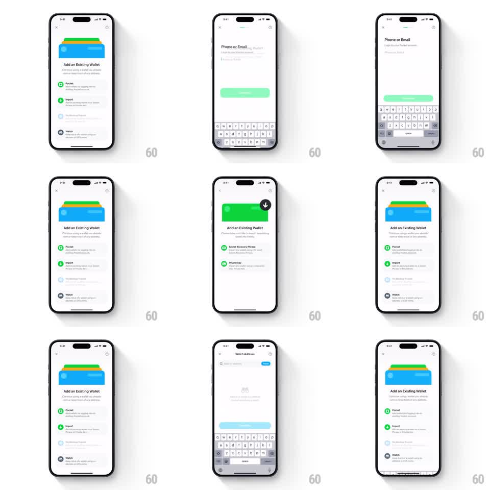

Media
Frame-by-frame

Rebuild this interaction 1:1: Family's wallet onboarding continuity transition - tapping an option on the "Add an Existing Wallet" screen fluidly morphs the stacked-cards wallet illustration into the next screen's input field while the keyboard slides up.

Rebuild this interaction 1:1: Family's wallet onboarding continuity transition - tapping an option on the "Add an Existing Wallet" screen fluidly morphs the stacked-cards wallet illustration into the next screen's input field while the keyboard slides up. ## Integration Integration: stack-agnostic spec - springs given as stiffness/damping, timed motions as duration + curve; map every value to your framework and animation library of choice. ## Scene Light onboarding flow on off-white: screen A "Add an Existing Wallet" (a blue/green/yellow stacked wallet illustration at top, option rows with green icons - Pocket, Import, Watch - each with a title and subtitle). Screen B "Phone or Email" (input field, green primary button, keyboard). Screen C "Watch Address" (search-style input, blue button). ## Motion spec Pattern: shared-element morph between screens, ~600ms per transition. - Tap on an option row: row highlights (background darkens 5%, 100ms). - The wallet illustration's top card lifts and expands (width -> full-bleed input width, corner radius 16px -> 12px, 400ms, ease-in-out) traveling down-screen to become the input field's frame. - Screen A's list fades and slides down 24px (250ms) while screen B's title and label fade in above the morphing element (staggered 100ms). - The primary button fades in below the input (200ms, after the morph lands); keyboard slides up with the system spring, arriving as the morph completes. - Back navigation runs the exact reverse: input contracts back into the wallet stack. ## Calibration - The morph is one continuous tween of the same layer; cutting between two views kills the continuity trick. - Keyboard and morph finish within 100ms of each other - a late keyboard reads as a second, separate screen load. ## Reduced motion Standard crossfade + slide between screens (300ms); illustration does not morph. ## Don't miss - The illustration's accent color carries into the input's focus ring - the color thread is what ties the two screens together. - Option rows not tapped fade away, they do not slide - only the shared element travels.